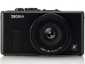

器材库 > 不可换镜头数码相机 > DP2s

规格总览
发布日期
2010-02-22
影像规格
影像传感器
Foveon X3
影像传感器尺寸
20.7×13.8mm
有效像素
1406万
影像处理器
“TRUE II”真像图像处理引擎
静态图像尺寸
high: 2640×1760; Wide: 2640×1485; Medium: 1872×1248; Low: 1312×880
静态图像格式
JPEG, RAW
画幅比
3:2
短片尺寸
320×240@30fps
短片格式
AVI
镜头和对焦
镜头结构
7片/6组
焦距
24.2mm
等效35mm画幅焦距
41mm
最大光圈
f/2.8
数码变焦
3倍
自动对焦系统
相比检测系统
对焦模式
AF / MF
AF辅助灯
有
手动对焦
支持
曝光控制
测光模式
中央重点测光, 多分区评价测光, 点测光
曝光模式
P（程序自动曝光）, A（光圈优先自动曝光）, S（快门速度优先自动曝光）, M（手动测光曝光）
快门速度
1/2000 秒 至 15 秒
曝光补偿
±3EV以1/3EV级调整
ISO感光度
100, 200, 400, 800, 1600, 3200, 自动
白平衡
日光, 白炽灯, 闪光灯, 自定义, 阴影, 自动, 钨丝灯
自拍
10秒, 2秒
拍摄模式
每秒3张
闪光灯
内置闪光灯
固定
闪光模式
自动, 慢速同步, 减轻/消除红眼
闪光指数
GN 6 (ISO 100)
闪光涵盖范围
28cm－3m (ISO200)
外接闪光灯
EF-140 DG 闪光灯
取景规格
LCD类型
彩色TFT LCD
LCD尺寸
2.5英寸
LCD像素
23万
文件输入/输出
存储卡
SD/SDHC
数据接口
USB2.0
视频/音频接口
AV 输出
电源
电池
锂离子电池BP-31
外观
颜色
黑色
尺寸
113.3 x 59.5 x 56.1mm
重量
260g
该产品暂无存档的网友点评
产品图 / 样片
适马 DP2s
评测 / 相关文章
- 详细内容 （存档）
- 适马DP2s评测报告 （存档）
- ［资讯］DIY适马DP系列手柄 （存档）
- ［资讯］“X3梦！”之适马DP2s改M42口 （存档）
- ［资讯］支持多款新相机 SILKYPIX软件升级 （存档）
- ［资讯］适马发布DP2 DP2s固件升级程序 （存档）
- ［影像］春意盎然 适马DP2s试片 （存档）
相关文章
- ［资讯］DIY适马DP系列手柄 （存档）
- ［资讯］“X3梦！”之适马DP2s改M42口 （存档）
- ［资讯］支持多款新相机 SILKYPIX软件升级 （存档）
- ［资讯］适马发布DP2 DP2s固件升级程序 （存档）
- ［影像］春意盎然 适马DP2s试片 （存档）
- ［资讯］新品走廊：适马DP2s （存档）